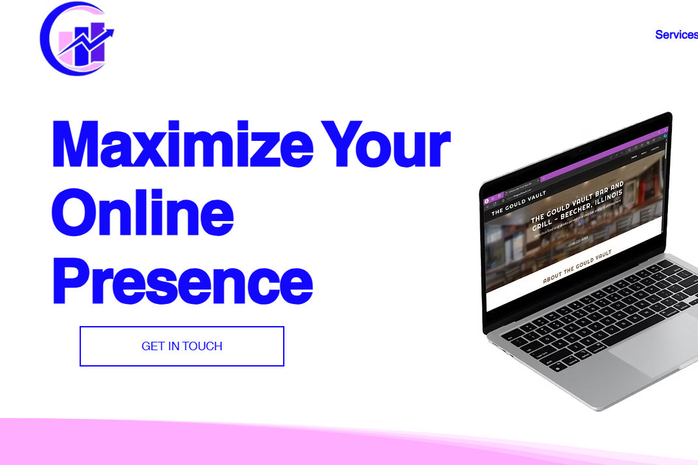

Home
Welcome to the home page of my first project for ITMD 361. This course is required for my major but web development has always interested me greatly. So far the course has been a nice refresher on HTML after it has been a few years without using it; however, I hope to continue refreshing and building on my knowledge of HTML. The pages of this website showcase the classes and work experience I have as well as some of my personal interests.
At the start of highschool I had wanted to be a full-stack web developer moved to the design aspect by the end of highschool. Since then I have desigend websites for a few local businesses from my hometown mainly in the food industry. I started my own LLC this past summer and have continued to update past websites. I started to find an interest in marketing and began to combine my web design services with digital marketing services. Despite my best efforts, being a full-time college student and a business owner/web designer I have had to set getting new clients in favor of maintaing current clients and completing college. This summer I plan to hire a sales representative for the company to remove the sales aspect from my workload. After the summer I am looking into hiring a front-end designer and delegating all consumer facing responsibilities of the business away from me to focus on the longtime strategy and growth of the business.
Outside of my design and marketing services I am also created a no-code application using the Bubble software. I currently have a minimum viable product for the application for web usage however am currently developing the mobile side as well. I have done the design and logic workflow of the application myself and it has taken about 3 months of work but spread over the last two years. The current monetization plan for the application is through ads and an optional payment to remove all ads. I decided to avoid subscriptions based models because of the stigma many people have against it. Additionally, it is a family-oriented app so to have families pay for a subscription for the service does not seem to benefit them. I started the application as a test of the software but have obviously grown it into a more serious project since then.
I am active on LinkedIn always looking to connect others with similar goals. Feel free to connect with me.
Outside of my professional page on LinkedIn I also have an Instagram page that I post my vacation photos on. Look at some of the places I have traveled to.